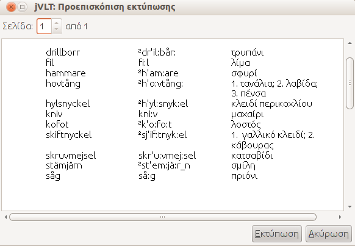
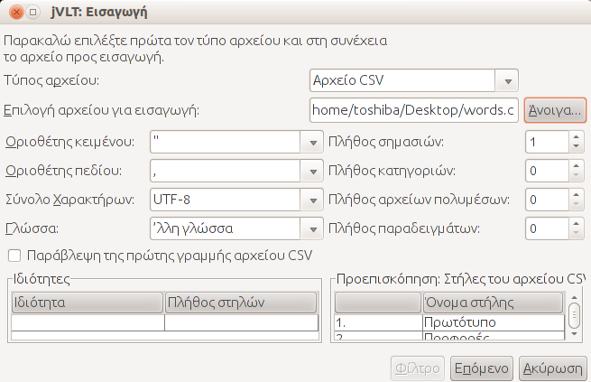
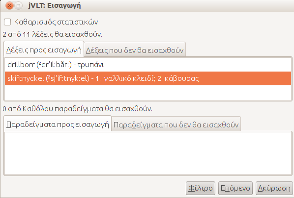
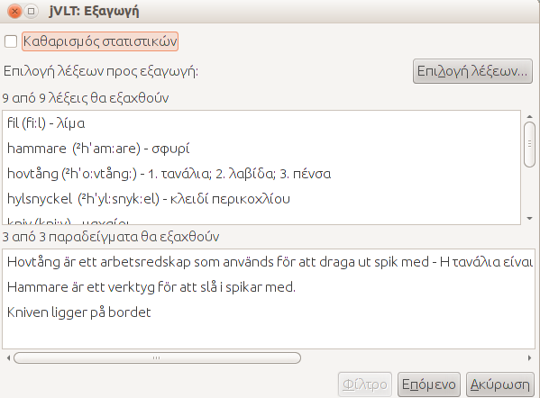
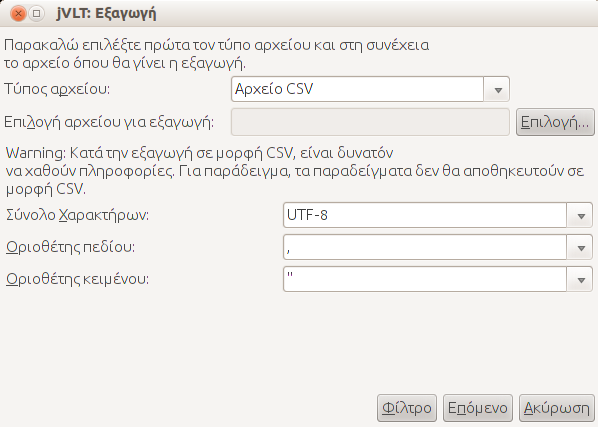

jVLT - Ένα εργαλείο εκμάθησης λεξιλογίου
Διάφορα
Εκτύπωση
Το jVLT σου επιτρέπει να εκτυπώσεις τα περιεχόμενα του λεξικού σου. Μπορείς να επιλέξεις απευθείας "Εκτύπωση..." από το μενού "Αρχείο" ή να εμφανίσεις πρώτα μια προεπισκόπηση επιλέγοντας "Εκτύπωση Προεπισκόπησης" από το ίδιο μενού, και μετά να εκτυπώσεις. Εάν δεν θέλεις να εκτυπώσεις όλες τις λέξεις μπορείς να επιλέξεις συγκεκριμένες χρησιμοποιώντας τα φίλτρα της λίστας λέξεων. Το ποιές στήλες θα εκτυπωθούν εξαρτάται από τις στήλες που επιλέχθηκαν από τη λίστα λέξεων Ομοίως τα πλάτη των στηλών εξαρτώνται από τα πλάτη των στηλών στη λίστα λέξεων. Μπορείς να επιλέξεις τη γραμματοσειρά που θα χρησιμοποιηθεί την εκτύπωση από το παράθυρο διαλόγου προτιμήσεων.
Εισαγωγή λεξικών
Μπορείς να εισάγεις αρχεία λεξικών τα οποία είναι τύπου jVLT ή CSV (comma separated values - λέξεις χωρισμένες με κόμματα) επιλέγοντας "Εισαγωγή" από το μενού "Αρχείο". Τα αρχεία τύπου CSV μπορούν να δημιουργηθούν με προγράμματα υπολογιστικών φύλλων όπως το OpenOffice.org Calc.Στο παράθυρο διαλόγου επιλέγεις τον τύπο του αρχείου που πρόκειται να εισαχθεί και στη συνέχεια επιλέγεις το ίδιο το αρχείο πατώντας "Άνοιγμα...". Εάν έχεις επιλέξει "αρχείο CVS" ως τύπο αρχείου γίνονται διαθέσιμες οι εξής νέες επιλογές:
- Οριοθέτης κειμένου: Είναι ο χαρακτήρας που οριοθετεί τα περιεχόμενα κειμένου σε ένα αρχείο CSV. Προεπιλογή είναι το εισαγωγικό (").
- Οριοθέτης πεδίου: Είναι ο χαρακτήρας που οριοθετεί τα πεδία σε ένα αρχείο CSV. Προεπιλογή είναι το κόμμα (",").
- Σύνολο χαρακτήρων: Είναι το σύνολο χαρακτήρων που χρησιμοποιεί το αρχείο CSV. Προεπιλογή είναι το UTF-8.
- Γλώσσα: Εάν η γλώσσα του λεξιλογίου σου υποστηρίζεται από το jvlt, μπορείς να την καθορίσεις εδώ. Μερικές γλώσσες έχουν πρόσθετες ιδιότητες. Αυτές οι ιδιότητες μπορούν να επιλεχθούν από τον πίνακα Ιδιότητες.
- Παράβλεψη της πρώτης γραμμής: Εάν το CSV αρχείο έχει γραμμή κεφαλίδας πρέπει να χρησιμοποιήσεις αυτή την επιλογή.
- Πλήθος σημασιών: Αυτή η επιλογή καθορίζει το πόσες στήλες θα χρησιμοποιηθούν για την σημασία των λέξεων (μπορεί να είναι παραπάνω από μία). Για κάθε σημασία χρησιμοποιούνται δύο στήλες, μια για τη μετάφραση και μια για την επεξήγηση. Κάθε λέξη πρέπει να έχει τουλάχιστον μια σημασία που ή θα περιέχει μετάφραση, είτε νόημα, ή και τα δύο.
- Πλήθος κατηγοριών: Το πλήθος των στηλών για τις κατηγορίες. Μια κατηγορία μπορεί να είναι μια αυθαίρετη συμβολοσειρά.
- Πλήθος πολυμεσικών αρχείων: Το πλήθος των στηλών για τα αρχεία πολυμέσων. Ένα πολυμεσικό αρχείο μπορεί να δίνεται από ένα απόλυτο ή σχετικό μονοπάτι. Το σχετικό μονοπάτι καθορίζει την τοποθεσία του πολυμεσικού αρχείου που σχετίζεται με το αρχείο λεξιλογίου.
-
Πλήθος παραδειγμάτων:
Αυτή η ρύθμιση καθορίζει το πλήθος των στηλών που χρησιμοποιούνται για ένα παράδειγμα.
Κάθε παράδειγμα έχει 3 στήλες. Η πρώτη περιέχει το ίδιο το παράδειγμα και η τρίτη την
σημασία του(προαιρετικά). Η δεύτερη μπορεί να είναι άδεια ή να περιέχει τη συνδεδεμένη
σημασία στη μορφή "συνδεδεμένη λέξη;δείκτης σημασίας", "συνδεδεμένη λέξη" ή "δείκτης σημασίας"
(χρησιμοποιείται η τιμή "1" από προεπιλογή)
Έστω ο παρακάτω πίνακας:
Πρωτότυπο Προφορά 1η μετάφρ. 1η σημασία. 2η μετάφρ. 2η σημασία. Παράδειγμα Συνδ. σημασία Μετάφραση παραδείγματος warten περιμένω συντηρώ Das Flugzeug wird gerade gewartet. gewartet;2 gehen πηγαίνω Wir gehen ins Theater.
Η λέξη "warten" έχει κλιθεί στο παράδειγμα. Για το λόγο αυτό η κλιμένη μορφή της "gewartet" πρέπει να καθοριστεί. Το παράδειγμα χρησιμοποιεί τη δεύτερη σημασία της λέξης οπότε το νούμερο 2 ακολουθεί το ; στη στήλη της συνδεδεμένης σημασίας. Στο δεύτερο παράδειγμα, στη λέξη "gehen" αποδόθηκε μόνο μία σημασία, και η λέξη δεν έχει κλιθεί, οπότε η λίστα με τη συνδεδεμένη σημασία είναι άδεια. - Ιδιότητες: Εάν έχει καθοριστεί κάποια γλώσσα, ορισμένες προσαρμοσμένες ιδιότητες μπορεί να είναι διαθέσιμες. Ιδιότητες μπορούν να προστεθούν κάνοντας κλικ στο κελί στην πρώτη στήλη και την τελευταία γραμμή του πίνακα, και στη συνέχεια επιλέγοντας την ιδιότητα από μια αναδιπλούμενη λίστα. Είναι δυνατή η αφαίρεση μίας ιδιότητας επιλέγοντας το κενό αντικείμενο από την αναδιπλούμενη λίστα. Οι περισσότερες ιδιότητες αποτελούνται από μία μόνο στήλη. Εάν μια ιδιότητα αποτελείται από περισσότερες τιμές, το πλήθος των στηλών μπορεί να προσαρμοστεί.

Αφού επιλεχθεί το "Επόμενο", οι λέξεις και τα παραδείγματα που εισάγονται θα εμφανιστούν. Στην καρτέλα "Λέξεις που δεν θα εισαχθούν" εμφανίζονται λέξεις και παραδείγματα που δεν εισάγονται γιατί υπάρχουν ήδη στο λεξικό. Επιλέγοντας το check box στην κορυφή του παραθύρου διαλόγου, μπορείς να απομακρύνεις τα στατιστικά στοιχεία για τα δεδομένα που έχουν εισαχθεί. Πατώντας "Τέλος", ξεκινά η διαδικασία εισαγωγής των λέξεων.

Εξαγωγή
Μπορεί να γίνει εξαγωγή του τρέχοντος λεξικού, ή τμήματος αυτού σε αρχεία τύπου jVLT, CSV (comma separated values) ή HTML, μέσω του παραθύρου διαλόγου που ανοίγει επιλέγοντας "Αρχείο" και μετά "Εξαγωγή...".Στο παράθυρο διαλόγου που εμφανίζεται, η επιλογή λέξεων που πρόκειται να εξαχθούν γίνεται από το κουμπί "Επιλογή λέξεων...". Το νέο παράθυρο διαλόγου που ανοίγει είναι το ίδιο με αυτό που περιγράφεται στην ενότητα κουίζ. Ομοίως με τη διαδικασία εισαγωγής λέξεων, τα στατιστικά μπορούν και πάλι να απενεργοποιηθούν.

Πατώντας "Επόμενο", ένα νέο παράθυρο εμφανίζεται που επιτρέπει την επιλογή του τύπου αρχείου, και το ίδιο το αρχείο στο οποίο θα γίνει η εξαγωγή. Εάν πρόκειται για αρχείο τύπου CSV πρέπει να επιλέξεις "Τέλος" για να ολοκληρωθεί η εξαγωγή.